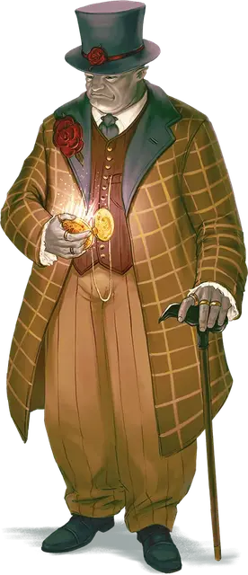

Господин Сумрак
Mister Witch
Средний Гуманоид (Эльф, Шадар-кай), хаотично-добрый, именной НИП

Класс Доспеха 10
Хиты 82 (11к8 + 33)
Скорость 30 футов
| мод | спас | ||
|---|---|---|---|
| СИЛ | 14 | +2 | +2 |
| ЛОВ | 11 | +0 | +0 |
| ТЕЛ | 16 | +3 | +3 |
| мод | спас | ||
|---|---|---|---|
| ИНТ | 16 | +3 | +5 |
| МДР | 13 | +1 | +3 |
| ХАР | 14 | +2 | +2 |
Навыки Восприятие +3, Магия +5, Обман +4
Сопротивление урону некротическая энергия
Чувства тёмное зрение 60 футов, пассивное Восприятие 13
Языки Общий, Сильван, Эльфийский
Опасность 3 (700 опыта)
Бонус мастерства +2
Особенности
Наследие фей. Сумрак имеет преимущество в спасбросках против очарования, и не может быть усыплен при помощи магии.
Особое снаряжение. Сумрак носит с собой и настроен на часы Сумеречного Света [Witchlight watch].
Действия
Мультиатака. Сумрак совершает две атаки Тростью.
Трость. . Рукопашная атака оружием: +4 к попаданию, досягаемость 5 фт., одна цель. Попадание: 4 (1к4+2) дробящего урона плюс 6 (1к12) урона некротической энергией.
Использование заклинаний. Пока Сумрак носит Часы Сумрачного света, он может наложить одно из следующих заклинаний, не затрачивая компонентов и используя Интеллект как базовую характеристику (Сл спасброска от заклинания 13, +5 к попаданию атакой заклинанием):
• Неограниченно: огненный снаряд [fire bolt], невидимость [invisibility] (после наложения совершить бросок к8; при выпадении 3 или 8, Сумрак не может наложить это заклинание до следующего восхода), сообщение [message];
Бонусные действия
Благословение Королевы воронов (1/день). Сумрак телепортируется вместе со всем своим снаряжением в любое видимое им свободное пространство в 30 футах от него. До своего следующего хода он становится похожим на призрака и получает сопротивление всем видам урона.
Описание
Сумрак, носивший имя Наэрикс Крампл, провел свою юность бездомным сиротой, влача жалкое и беспросветное существование на окутанных туманом улицах Мракобродья, города в Царстве Теней. В детстве он зарабатывал гроши, продавая газеты, затем подметал полы, пока старый смотритель часовой башни не взял его к себе в помощники. Часы на башне были в таком плохом состоянии, что часто ломались. Наэрикс помогал с ремонтом и понял, что эта работа доставляет ему радость. Когда спустя годы старый хранитель умер, Наэрикс заменил его.
Богатая семья, владевшая часовой башней, не платила Наэриксу много денег за работу, но иногда его приглашали на ужин в имение. У него был один отличный костюм, который он надевал по таким случаям, и хотя ему не нравились ни матриарх, ни патриарх семьи, он наслаждался обществом их старшего сына, Урмиуса Умбраге - задумчивого шадар-кая с грубоватым чувством юмора. Наэрикс и Урмиус были близки по возрасту и во всём хорошо ладили. Спустя годы, не говоря ничего остальной своей семье, Урмиус купил подержанный карнавал и убедил Наэрикса помогать ему управлять им. Наэрикс и Урмиус - сейчас именуемые Господином Сумраком и Господином Светом - с тех пор стали партнерами.
описание Господина Сумрака
Господин Сумрак выглядит как видный джентльмен, так как всегда одет в красивую одежду. Его любимые предметы одежды - цилиндр и трость, и он никогда не бывает без его часов Сумеречного Света, которые были подарены ему предыдущим владельцем карнавала.